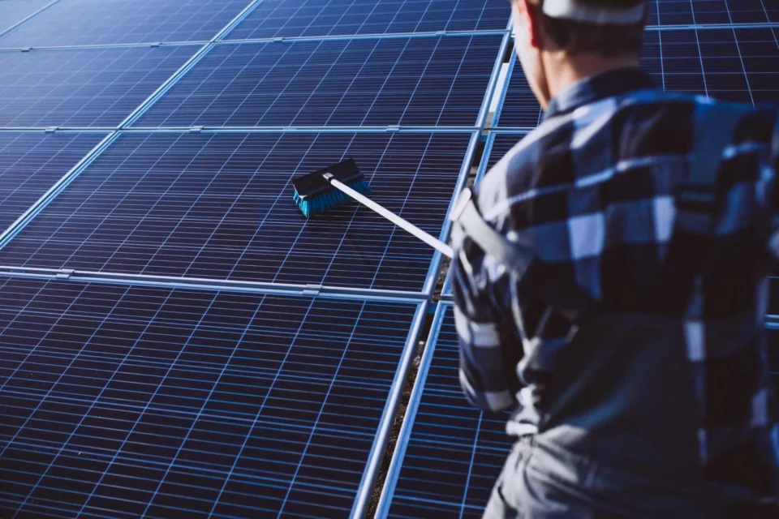
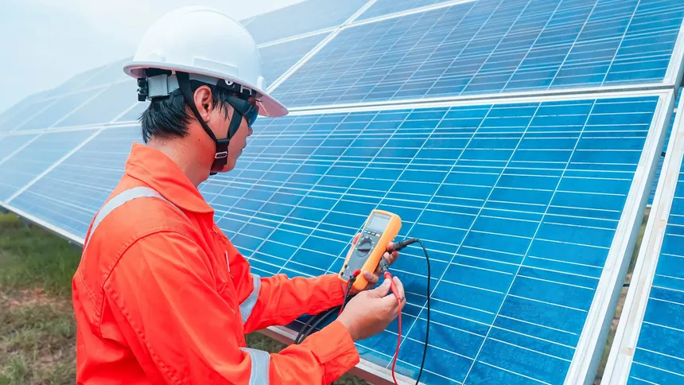
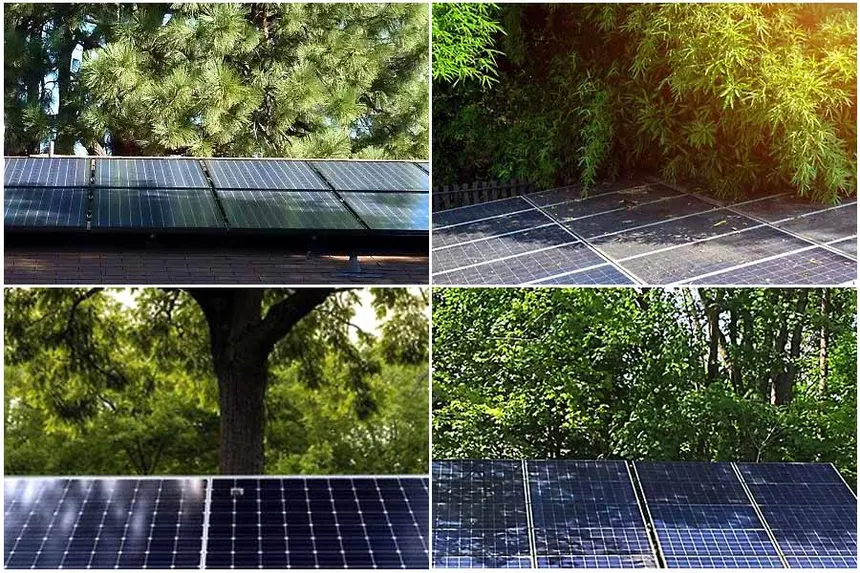

Introduction
Solar panels are a long-term investment in sustainable energy, but to ensure they perform at their best, regular maintenance is essential. Proper care can extend the lifespan of your solar system, maximize energy production, and protect your investment. At Re One Astralis, we’re committed to helping our clients in Ahmedabad, Gujarat, keep their solar panels in top condition. In this blog post, we’ll share five practical tips to maintain your solar panels for optimal performance.
1. Clean Your Solar Panels Regularly
Dust, dirt, bird droppings, and other debris can accumulate on your solar panels, reducing their efficiency. Regular cleaning ensures that sunlight can reach the panels unobstructed. Use a soft cloth or sponge with water and mild soap to gently clean the surface. Avoid abrasive materials or high-pressure hoses, as they can damage the panels. In Ahmedabad’s dusty climate, we recommend cleaning your panels every 3-6 months, depending on the local environment.
2. Monitor Performance Regularly
Most solar systems come with monitoring tools that allow you to track energy production in real-time. Regularly check your system’s performance to ensure it’s generating the expected amount of electricity. A sudden drop in output could indicate issues like dirt buildup, shading, or technical problems. Many modern inverters have apps that make monitoring easy, so you can quickly identify and address any inefficiencies.
3. Inspect for Damage or Wear
Periodically inspect your solar panels for signs of damage, such as cracks, discoloration, or loose connections. Weather events like heavy rain or hail can occasionally cause issues, especially if your panels are older. Check the mounting hardware and wiring for any wear and tear as well. If you notice any damage, contact a professional to assess and repair the system to prevent further efficiency losses.
4. Trim Nearby Trees and Remove Obstructions
Shading from trees, buildings, or other obstructions can significantly reduce your solar panels’ efficiency. Over time, trees may grow taller and cast shadows on your panels, especially during certain times of the day. Regularly trim branches or remove any obstructions that block sunlight. When installing panels, Re One Astralis ensures optimal placement, but ongoing vigilance is key to maintaining performance.
5. Schedule Professional Maintenance

While solar panels are low-maintenance, scheduling a professional check-up once a year can help identify issues you might miss. A trained technician can inspect the entire system, including the inverter, wiring, and panels, to ensure everything is functioning correctly. At Re One Astralis, we offer comprehensive maintenance services to keep your solar system in peak condition, giving you peace of mind and maximizing your investment.
Conclusion
Maintaining your solar panels doesn’t have to be complicated. By following these five tips—regular cleaning, monitoring performance, inspecting for damage, removing obstructions, and scheduling professional maintenance—you can ensure your solar system operates at peak efficiency for years to come. At Re One Astralis, we’re here to support you every step of the way in Ahmedabad, Gujarat. Need help with your solar panel maintenance? Contact us today to schedule a service and keep your system shining bright.